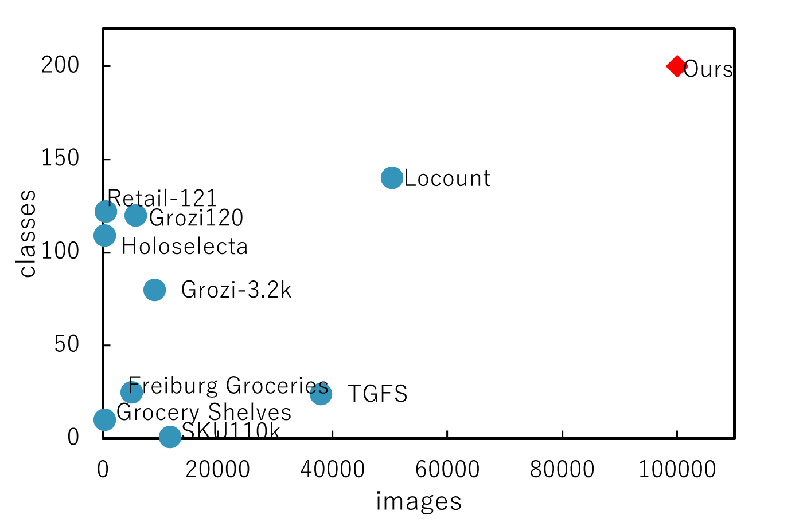
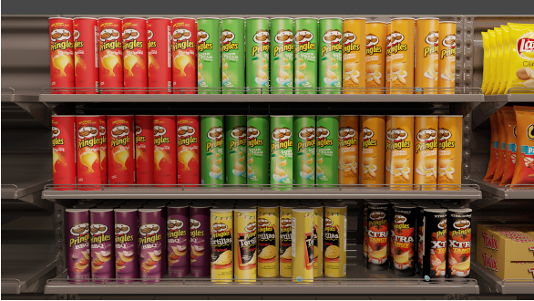

CG Retail Shelves Dataset
- A Massive-Scale, Photorealistic, Rich Annotated CG Dataset for Retail Image Processing -
About
MASSIVE SCALE

DIVERSITY
In the 200 types of retail products we selected for creating the dataset, there are many items under the same brand with different flavors (thus, with package designs that closely resemble each other). We believe that the dataset we have created this time poses more challenging problems compared to existing datasets.

PHOTOREAL IMAGES
We not only meticulously modeled retail products and shelves, but also established parameters considering physical aspects such as reflectance, and synthesized photorealistic CG images. Moreover, by adjusting lighting setups, we replicated real-world scenarios, depicting effects like saturation due to light reflection in some images.